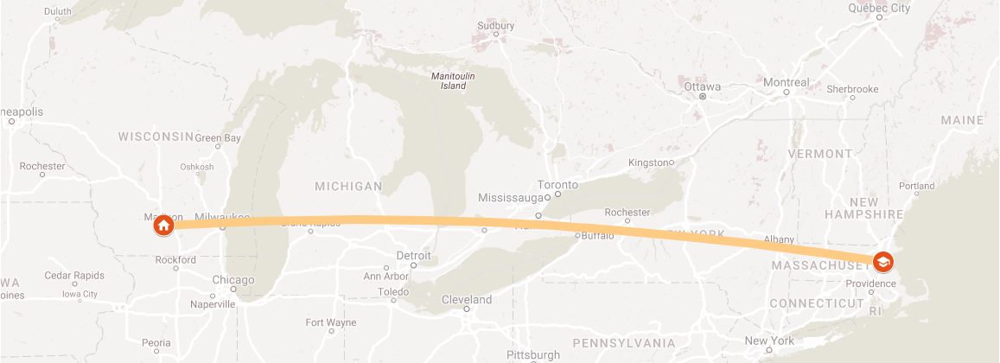
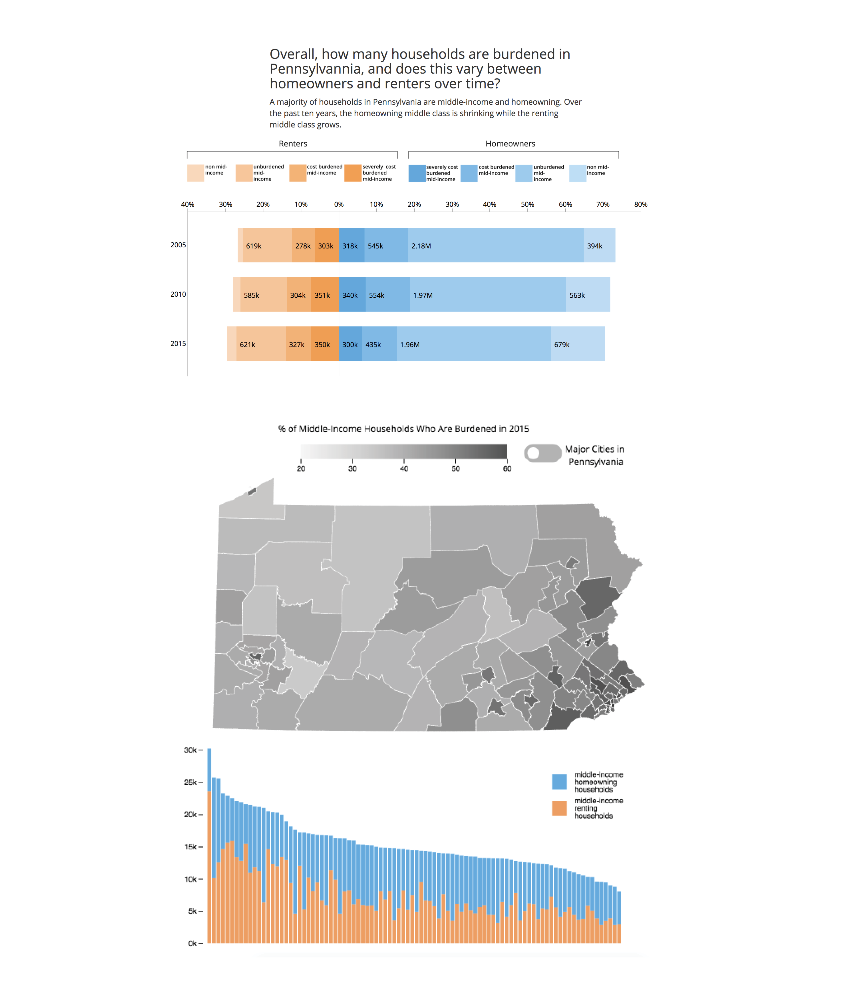

About
I am a master's student at MIT's Department of Urban Studies and Planning concentrating in City Design and Development. Before graduate school, I studied studio art and literature, served as an AmeriCorps environmental educator with the Maine State Parks and Maine Audubon, and worked at an energy efficiency engineering and consulting firm in Burlington, Vermont. After graduating from MIT in spring 2018, I am moving to Madison, Wisconsin to continue my career in urban planning. My professional interests include: physical planning and urban design that incorporates environmental resiliency and placemaking; innovative engagement processes that reach the entire community, context-specific community development, and future-oriented land use and transportation strategy.
My current research is focused on: missing middle housing in Austin, TX, industrial land use conversion and retrofit in Milwaukee, Madison, and Saint Paul, and the the US Housing Corporation's housing development and neighborhood planning work during WWI. To find out more about what I'm working on, check out my recent PROJECTS. Also check out some of my ART projects.
Contact

I currently live in Somerville, Massachusetts, but will relocate to Madison, Wisconsin in June 2018. You can reach me by email at danya@mit.edu
Imagine Madison

As part of the Imagine Madison Comprehensive Plan update team for the City of Madison during the summer of 2017, I worked with the Planning Division staff to coordinate community engagement appearances throughout the city and create fun ways to give feedback on the plan, from booths at festivals and farmer's markets to a community discussion event at the central library. I also created a methodology and lead a process for summarizing and analyzing the data collected through community engagement. Through speaking with Madisonians about the Comprehensive Plan city staff realized that the Future Land Use Map, which is one of the most important tools that the city has for land-use planning, was not easily understood by community members. I developed an educational board and presentation to explain how the FLU is used and what it means for the future of Madison as part of our engagement efforts. Find out more about Imagine Madison here.
Prelude | Procession | Pond | Party

This placemaking proposal for the former Mill Creek watershed in West Philadelphia responded to the landscape and neighborhood context by celebrating the life of the former creek through a day-long series of proposed events, art installations, performances, and community meetings. The proposal ties together the historical narrative of subsiding urban land in an buried flood plain with future-oriented planning processes, building on the ideas of landscape literacy first developed through the West Philadelphia Landscape Project. This project was made in collaboration with Ben Turpin and Chelsea Bruck as part of a class entitled Ecological Urbanism.
Connecting Bowdoin Geneva

During the spring semester of 2017, I acted as Co-Project Manager for a group of 16 of my peers as we developed a commercial corridor revitalization plan for a low-income district in the Dorchester neighborhood of Boston, MA. The plan included an evaluation and inventory of the businesses on the corridor as well as the built environment and a market study to determine what opportunities for new businesses in the neighborhood commercial area could be, as well as an in-depth physical analysis of the existing streetscape, transportation network, and open space network. Our class held two public workshops, conducted business owner surveys, focus groups, and stakeholder interviews, and gave a final presentation to the community with our urban design and economic development recommendations. In 2018, Connecting Bowdoin Geneva was awarded the national AICP Student Project Award for Application of the Planning Process. The final report can be found here: Connecting Bowdoin Geneva – A Plan for Community and Commerce Our Partner: Bowdoin Geneva Main Streets
Boston Zero

This neighborhood design for the Boston Seaport district adjacent to East Boston was made by repeating an optimized “protoblock” design across a large site. The protoblock iterations were made to optimize daylighting and energy use using the Rhino-based urban energy modeling software developed at MIT called UMI. The complete site plan also featured solar panels on rooftops and an optimized distribution of amenities across the neighborhod. Shown above are the modeling results for the whole site design using UMI - at left, the daylighting model results are displayed on the floorplates of the site, while the image at the top right shows a walkability score displayed across the site based on proximity to parking. Below, each use of the site model is displayed in additive layers. The entire project presentation can be viewed at the MIT Sustainable Design Lab website. Project in collaboration with Greg Hopkins, Jiamin Sun, and Edward Barbour. Contribution: 100% of site plan, street grid, and open space planning based on protoblock iterations at left, 25% of energy and daylight modeling, 100% of 3D build diagrams.
Is the Middle Class Left Out in PA?
This data analysis and visualization project used PUMS census data to analyze housing cost burden across income brackets in Pennsylvannia, among both renters and owners, to better understand which segments of the population were experiencing extreme burden, and burden that is increasing over time. The article includes infographics and interactive data visualizations made with D3 to uncover this story.The complete interactive website can be viewed here.This project was completed in collaboration with Phoebe Holtzman and Emily Long in Spring 2017 for a class entitled Big Data Visualization.
Urban Design Skills

This theoretical mixed-use development project in Cambridge, Massachusetts was the culminating project for the Introduction to Urban Design Skillsi> class at MIT. The project mirrored Magazine Beach Park into the site with a linear “Wedge Park,” and improved pedestrian connectivity with public plazas, raised crosswalks, and directing pedestrians to an exisitng bridge across Memorial Drive while incorporating green infrastructure into new public space. Academic work, fall 2016. Project in collaboration with Mario Gampieri, Nneka Sobers, and Daniel Mascoop Contribution: context analysis - 100%; site design in collaboration with group - 25%; detailed Wedge Park drawing - 100%; open space systems diagram - 50%